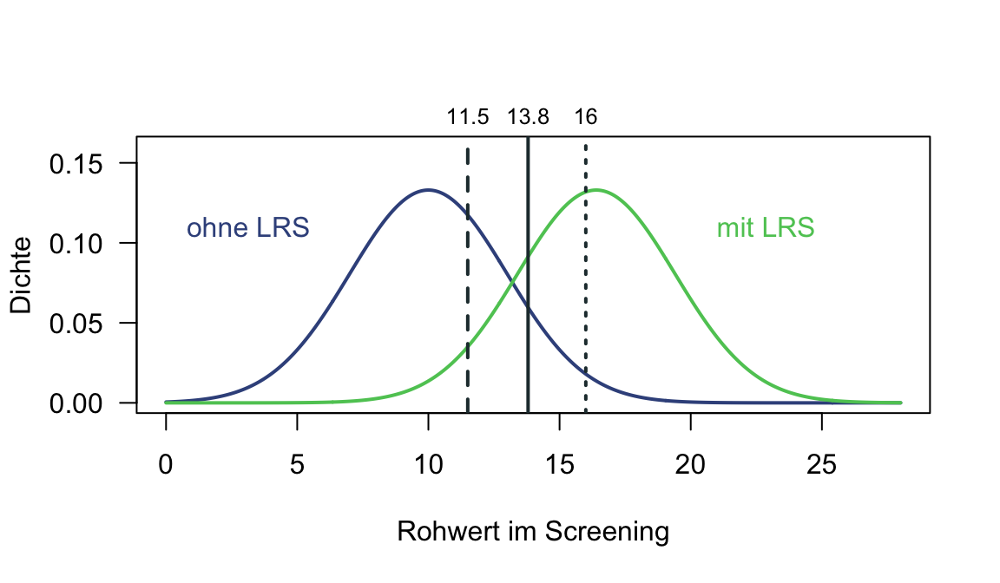
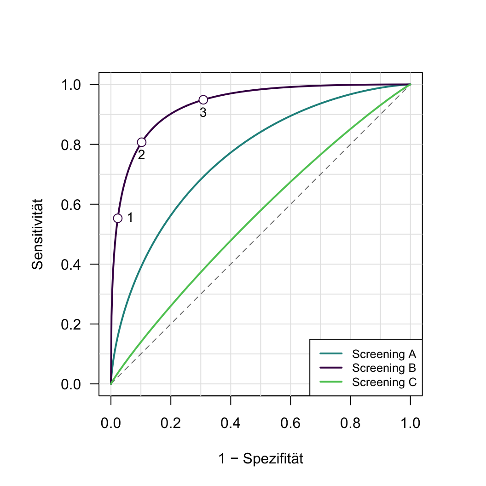
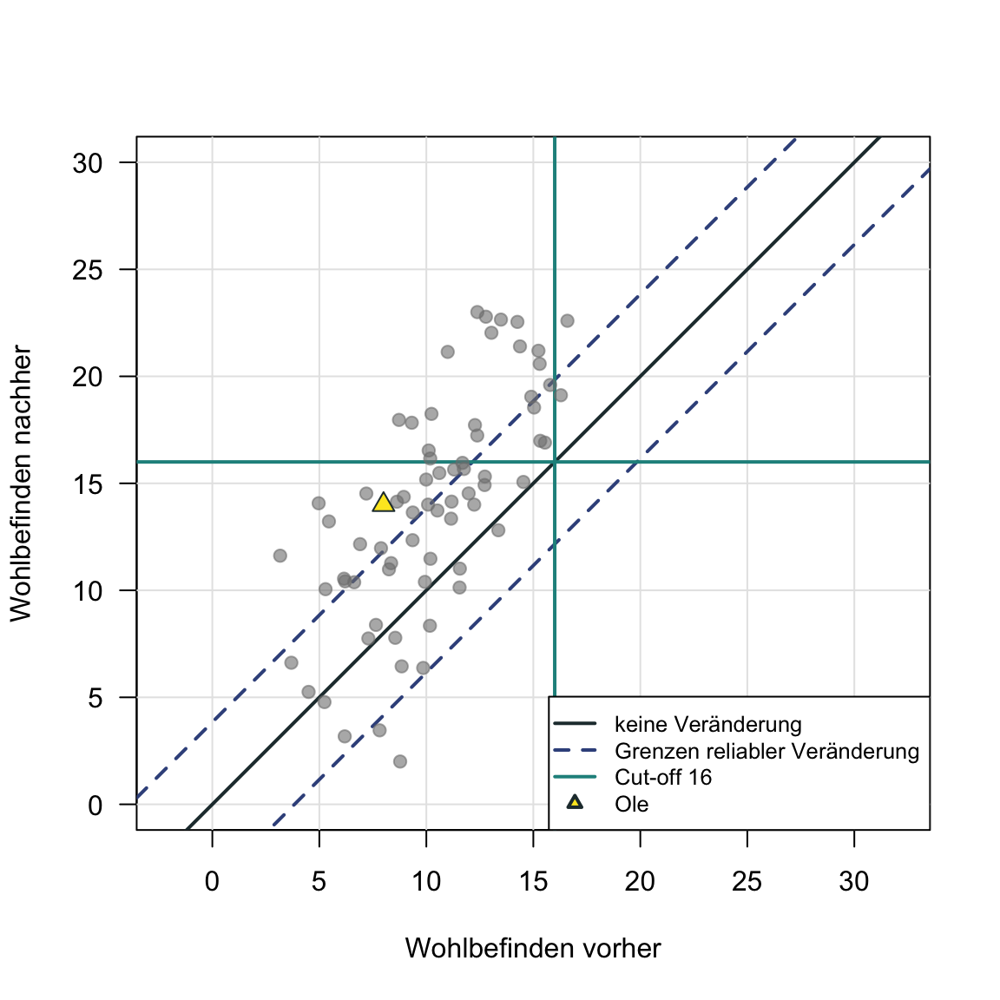

12 Diagnostische Rechenkompetenzen II
WichtigWork in Progress
Dieses Kapitel wird derzeit intern überarbeitet. Aufgaben, Daten und Lösungen können sich noch ändern. Bitte bearbeiten Sie die Aufgaben erst, wenn die Überarbeitung abgeschlossen ist und dieser Hinweis entfernt wurde.
In diesem Kapitel üben Sie die Berechnung von Konfidenzintervallen um Normwerte, das Prüfen diagnostischer Hypothesen, die Güte von Klassifikationen und die Bewertung von Veränderungen. Alle Fälle und Daten sind fiktiv.
Aufgabe 1 (Kritische z-Werte) Die folgende Tabelle zeigt einen Auszug aus der Tabelle der Standardnormalverteilung: Links von \(z\) liegt der Flächenanteil \(p\).
| \(p\) | 0.900 | 0.950 | 0.975 | 0.990 | 0.995 |
|---|---|---|---|---|---|
| \(z\) | 1.28 | 1.645 | 1.96 | 2.33 | 2.58 |
Welcher kritische z-Wert passt zu den folgenden Situationen?
- Eine Schulpsychologin prüft mit einem Konfidenzkoeffizienten von 99 %, ob die Rechenleistung eines Kindes unterdurchschnittlich ist.
TippLösung
\(z = 2.33\) (einseitig)
- Eine Klinik prüft mit einem Konfidenzkoeffizienten von 95 %, ob ein Wert im Normalbereich liegt, also weder zu niedrig noch zu hoch ist.
TippLösung
\(z = 1.96\) (zweiseitig)
- Ein Unternehmen prüft mit einem Konfidenzkoeffizienten von 95 %, ob eine Bewerberin überdurchschnittlich belastbar ist.
TippLösung
\(z = 1.645\) (einseitig)
Aufgabe 2 (Standardwerte) Eine Forschungsgruppe der RPTU untersucht, wie sich eine schlaflose Nacht auf die Konzentration auswirkt. Damit die Ergebnisse nicht von besonders schwachen oder besonders starken Ausgangswerten abhängen, nimmt sie nur Personen mit durchschnittlicher Konzentrationsleistung auf. Jonas ist 19, studiert im ersten Semester und sammelt Versuchspersonenstunden. Um abzuklären, ob Jonas’ Konzentrationsleistung durchschnittlich ist und er an der Studie teilnehmen kann, führt man mit ihm im Vorfeld den Aufmerksamkeits- und Konzentrationstest d2-R (Brickenkamp et al., 2010) durch. Für seine Konzentrationsleistung erhält Jonas einen Standardwert von 108. Nehmen Sie als Reliabilitätsschätzer Cronbachs Alpha von 0.90 an und prüfen Sie damit die Hypothese, ob Jonas’ Konzentrationsleistung im d2-R im Vergleich zu Gleichaltrigen im durchschnittlichen Bereich liegt (\(90 \le \text{SW} \le 110\)).
HinweisHinweis
Standardmessfehler und zweiseitiges Konfidenzintervall:
\[ s_e = SD_x \cdot \sqrt{1 - Rel_x}, \qquad KI = X \pm z_{\alpha/2} \cdot s_e \]
Einseitiges Konfidenzintervall, je nach Richtung der Hypothese:
\[ KI_u = X - z_{\alpha} \cdot s_e \quad \text{bzw.} \quad KI_o = X + z_{\alpha} \cdot s_e \]
Standardwerte haben einen Mittelwert von 100 und eine Standardabweichung von 10.
- Berechnen Sie den Standardmessfehler.
TippLösung
\(s_e \approx 3.16\)
- Berechnen Sie das passende Konfidenzintervall mit einem Konfidenzkoeffizienten von 95 % um Jonas’ Standardwert.
TippLösung
\([101.80, 114.20]\)
- Wie lässt sich das Intervall interpretieren?
TippLösung
Mit 95%iger Wahrscheinlichkeit gehört das berechnete Konfidenzintervall zu denjenigen Intervallen, die Jonas’ wahren Wert enthalten. Es ist daher sehr plausibel, dass sein wahrer Wert zwischen 101.80 und 114.20 liegt.
- Wird die Hypothese positiv oder negativ beantwortet?
TippLösung
Negativ.
- Was folgt daraus für die globale Fragestellung?
TippLösung
Jonas’ Konzentrationsleistung lässt sich als durchschnittlich bis überdurchschnittlich beschreiben. Nach dem Aufnahmekriterium der Studie spricht das dagegen, dass Jonas an der Studie teilnimmt.
- Zwischen welchen Standardwerten muss ein Messwert im d2-R liegen, damit die Hypothese bei dieser Reliabilität positiv beantwortet wird?
TippLösung
Zwischen 96.20 und 103.80.
Aufgabe 3 (Hochbegabung) Ida ist 13 und besucht die 7. Klasse eines Gymnasiums. In Mathematik löst sie die Aufgaben schneller als ihre Mitschüler:innen, und in ihrer Freizeit programmiert sie gerne kleine Computerspiele. Im Unterricht langweilt sie sich und zieht sich immer mehr zurück. Ihre Eltern schlagen deshalb vor, Ida auf eine Schule mit besonderer Förderung für hochbegabte Kinder zu schicken. Diese Schule verlangt im Berliner Intelligenzstrukturtest für Jugendliche (BIS-HB, Jäger et al., 2006) einen IQ im Bereich der Hochbegabung, also über 130, und bittet die Eltern, sich an den schulpsychologischen Dienst zu wenden. Ida erhält im BIS-HB einen IQ von 134. Nehmen Sie an, dass das Testmanual für Idas Altersgruppe als Reliabilitätsschätzer Cronbachs Alpha von 0.95 und eine Retest-Reliabilität von 0.85 angibt. Prüfen Sie die Hypothese, ob Idas IQ im BIS-HB im Vergleich zu Gleichaltrigen im Bereich der Hochbegabung liegt (\(\text{IQ} > 130\)).
HinweisHinweis
IQ-Werte haben einen Mittelwert von 100 und eine Standardabweichung von 15. Die Formeln für das Konfidenzintervall stehen im Hinweis zu Aufgabe 2.
- Welchen Reliabilitätsschätzer verwenden Sie? Begründen Sie Ihre Antwort.
TippLösung
Statusdiagnose: Cronbachs Alpha (0.95)
- Welchen Konfidenzkoeffizienten würden Sie wählen? Begründen Sie Ihre Antwort.
TippLösung
Zum Beispiel 95 %: eine hohe, aber nicht extrem hohe Sicherheit. Die Wahl hängt von den Konsequenzen der Entscheidung ab; je höher der Konfidenzkoeffizient, desto breiter das Intervall.
- Würden Sie ein ein- oder ein zweiseitiges Konfidenzintervall berechnen? Begründen Sie Ihre Antwort.
TippLösung
Einseitig (untere Grenze): Die Hypothese ist gerichtet.
- Nehmen Sie einen Konfidenzkoeffizienten von 95 % an und berechnen Sie das entsprechende Konfidenzintervall.
TippLösung
\([128.48, +\infty)\)
- Wird die Hypothese positiv oder negativ beantwortet?
TippLösung
Negativ.
- Was folgt daraus für die globale Fragestellung?
TippLösung
Nach der Aufnahmebedingung der Schule spricht das dagegen, dass Ida dorthin wechselt.
Aufgabe 4 (Fahreignung) Dragan ist 58 und fährt seit 25 Jahren Lkw für eine Spedition. Vor drei Monaten hatte er einen leichten Schlaganfall. Seitdem fällt es ihm schwer, sich lange zu konzentrieren. Sein Hausarzt rät ihm, vorerst nicht zu fahren, bis eine verkehrspsychologische Untersuchung klärt, ob er wieder fahren kann. Für Lkw-Fahrer:innen verlangen die Begutachtungsleitlinien zur Kraftfahreignung (Gräcmann & Albrecht, 2022) in Leistungstests in der Regel mindestens einen Prozentrang von 33, bezogen auf altersunabhängige Normwerte; das entspricht einem Standardwert von 95.6. Weil Lkw-Fahrer:innen zuverlässig Lenkzeiten einhalten, die Ladung sichern und das Fahrzeug kontrollieren müssen, setzt die Spedition Dragan außerdem nur dann wieder als Fahrer ein, wenn er mindestens durchschnittlich gewissenhaft ist. Nur wenn beide Anforderungen erfüllt sind, kann Dragan wieder als Lkw-Fahrer arbeiten. In der Untersuchung bearbeitet er deshalb den Aufmerksamkeits- und Konzentrationstest d2-R (Brickenkamp et al., 2010) und das Big Five Inventar 2 (BFI-2, Soto & John, 2017; deutsche Fassung: Danner et al., 2019), das unter anderem die Gewissenhaftigkeit erfasst. Prüfen Sie die folgenden Hypothesen:
- H1: Liegt Dragans Konzentrationsleistung im d2-R im Vergleich zu Erwachsenen aller Altersgruppen mindestens bei einem Prozentrang von 33 (\(\text{SW} \ge 95.6\))?
- H2: Liegt Dragans Wert auf der Skala Gewissenhaftigkeit des BFI-2 im Vergleich zu Gleichaltrigen mindestens im durchschnittlichen Bereich (\(T \ge 40\))?
Dragan erreicht im d2-R einen Standardwert von 102 und im BFI-2 einen T-Wert von 52. Nehmen Sie als Reliabilitätsschätzer Cronbachs Alpha von 0.90 für den d2-R und von 0.85 für das BFI-2 an.
HinweisHinweis
Standardwerte haben einen Mittelwert von 100 und eine Standardabweichung von 10, T-Werte einen Mittelwert von 50 und eine Standardabweichung von 10. Als durchschnittlich gilt der Bereich \(M \pm 1\,SD\), bei T-Werten also 40 bis 60. Die kritischen z-Werte stehen in der Tabelle zu Aufgabe 1, die Formeln für das Konfidenzintervall im Hinweis zu Aufgabe 2.
- Welchen Konfidenzkoeffizienten würden Sie wählen? Begründen Sie Ihre Antwort.
TippLösung
Einen hohen, z. B. 99 %: Wird Dragan fälschlich als fahrgeeignet eingestuft, gefährdet er sich und andere. Die Entscheidung soll deshalb besonders gut abgesichert sein.
- Berechnen Sie für beide Hypothesen das passende Konfidenzintervall mit einem Konfidenzkoeffizienten von 99 %.
TippLösung
H1: \([94.63, +\infty)\), H2: \([42.98, +\infty)\)
- Werden H1 und H2 positiv oder negativ beantwortet?
TippLösung
H1 negativ, H2 positiv.
- Welche Entscheidungsregel legt die Aufgabenstellung fest?
TippLösung
Die konjunktive Entscheidungsregel.
- Was folgt daraus für die globale Fragestellung?
TippLösung
Dass Dragans Konzentrationsleistung die Mindestanforderung erfüllt, lässt sich nicht mit ausreichender Sicherheit sagen. Damit spricht das Ergebnis derzeit dagegen, dass Dragan wieder als Lkw-Fahrer arbeitet. Nach den Begutachtungsleitlinien ist in einem solchen Zweifelsfall eine Fahrverhaltensprobe angezeigt.
- Wie fiele die Entscheidung mit einem Konfidenzkoeffizienten von 95 % aus?
TippLösung
Beide Hypothesen würden positiv beantwortet (H1: \([96.80, +\infty)\), H2: \([45.63, +\infty)\)). Nach der konjunktiven Regel spräche dann aus psychologischer Sicht nichts dagegen, dass Dragan wieder als Lkw-Fahrer arbeitet.
Aufgabe 5 (Vom Rohwert zum Konfidenzintervall) Nora ist 31 und Softwareentwicklerin. Im Vorstellungsgespräch hat sie mit ihrem selbstbewussten Auftreten überzeugt. Seit dem Ende der Probezeit beschweren sich ihre Kolleg:innen aber immer häufiger, dass sie andere abwertet, um selbst besser dazustehen. Weil die Konflikte sie belasten, wendet sich Nora an die Betriebspsychologin. Diese bietet ein Coaching zum Umgang mit Konkurrenz im Team an und empfiehlt es, wenn die narzisstische Rivalität überdurchschnittlich ausgeprägt ist. Sie legt Nora die Kurzform des Narcissistic Admiration and Rivalry Questionnaire (NARQ-S, Leckelt et al., 2018; Back et al., 2013) vor, die mit je drei Items die narzisstische Bewunderung und die narzisstische Rivalität erfasst. Damit prüft die Psychologin die Hypothese, ob Noras Ausprägung auf der Skala Rivalität im Vergleich zu Erwachsenen im überdurchschnittlichen Bereich liegt (\(z > 1\)).
Nora beantwortet die Items auf einer Ratingskala von 1 („trifft gar nicht zu“) bis 6 („trifft voll und ganz zu“):
| Nr. | Item | Skala | Antwort |
|---|---|---|---|
| 1 | Ich ziehe viel Kraft daraus, eine ganz besondere Person zu sein | Bewunderung | 5 |
| 2 | Mit meinen besonderen Beiträgen schaffe ich es, im Mittelpunkt zu stehen | Bewunderung | 5 |
| 3 | Ich reagiere genervt, wenn eine andere Person mir die Schau stiehlt | Rivalität | 5 |
| 4 | Ich habe es verdient, als große Persönlichkeit angesehen zu werden | Bewunderung | 3 |
| 5 | Ich will, dass meine Konkurrenten scheitern | Rivalität | 4 |
| 6 | Die meisten Menschen sind ziemliche Versager | Rivalität | 5 |
Nehmen Sie an, dass der Summenwert der Skala Rivalität in einer Normstichprobe von Erwachsenen einen Mittelwert von 7.5 und eine Standardabweichung von 2.5 hat und dass der Reliabilitätsschätzer Cronbachs Alpha 0.75 beträgt. Die Entscheidung soll mit einem Konfidenzkoeffizienten von 95 % abgesichert sein.
- Berechnen Sie den Summenwert, den die Hypothese betrifft.
TippLösung
14 (Items 3, 5 und 6)
- Welches Messmodell wird in Teil a angenommen?
TippLösung
Das Modell essenziell tau-äquivalenter Messungen.
- Rechnen Sie Noras Summenwert in einen z-Wert um.
TippLösung
\(z = 2.6\)
- Berechnen Sie das passende Konfidenzintervall um Noras z-Wert.
HinweisHinweis
z-Werte haben einen Mittelwert von 0 und eine Standardabweichung von 1. Als überdurchschnittlich gilt ein Wert über \(M + 1\,SD\), also \(z > 1\).
TippLösung
\([1.78, +\infty)\)
- Wird die Hypothese positiv oder negativ beantwortet?
TippLösung
Positiv.
- Was folgt daraus für die Empfehlung der Psychologin?
TippLösung
Es kann mit ausreichender Sicherheit davon ausgegangen werden, dass Noras narzisstische Rivalität im Vergleich zu Erwachsenen überdurchschnittlich ausgeprägt ist. Nach ihrer Entscheidungsregel empfiehlt die Psychologin Nora das Coaching zum Umgang mit Konkurrenz im Team.
- Ist die NARQ-S für diese Einzelfallentscheidung gut geeignet? Begründen Sie Ihre Antwort.
TippLösung
Nur eingeschränkt: Die NARQ-S ist eine Kurzskala für Studien mit wenig Testzeit. Mit drei Items pro Skala ist die Reliabilität gering und das Konfidenzintervall breit. Für eine Einzelfallentscheidung eignet sich die Langform NARQ mit 18 Items (Back et al., 2013) besser.
Aufgabe 6 (Korrekte und inkorrekte Entscheidungen) Die Grundschulen eines Landkreises möchten Kinder mit Lese-Rechtschreib-Störung (LRS) schon in der zweiten Klasse erkennen, damit die Förderung früh beginnen kann. Dafür erproben sie ein zehnminütiges Screening. Alle 400 Kinder des Jahrgangs durchlaufen zusätzlich eine umfassende Diagnostik, deren Ergebnis als wahrer Zustand gilt. Die Konfusionsmatrix in Tabelle 1 zeigt, wie die Ergebnisse von Screening und Diagnostik zusammenfallen.
| LRS laut Diagnostik | keine LRS laut Diagnostik | |
|---|---|---|
| Screening positiv | 32 | 36 |
| Screening negativ | 8 | 324 |
- Ordnen Sie den vier Zellen der Konfusionsmatrix die Begriffe richtig positiv (RP, Treffer), falsch positiv (FP, falscher Alarm), falsch negativ (FN, Verpasser) und richtig negativ (RN, korrekte Ablehnung) zu.
TippLösung
RP = 32, FP = 36, FN = 8, RN = 324
- Berechnen Sie Sensitivität und Spezifität des Screenings.
TippLösung
Sensitivität = 0.80, Spezifität = 0.90
- Berechnen Sie den Youden-Index.
TippLösung
\(0.80 + 0.90 - 1 = 0.70\)
- Interpretieren Sie die Sensitivität und Spezifität inhaltlich.
TippLösung
80 % der Kinder mit LRS werden korrekt als auffällig erkannt, 90 % der Kinder ohne LRS werden korrekt als unauffällig eingestuft.
- Das Screening stuft ein Kind ab einem bestimmten Rohwert als auffällig ein; die Konfusionsmatrix gilt für den Schwellenwert 13.8. Die Tabelle zeigt Sensitivität und Spezifität für drei mögliche Schwellenwerte. Berechnen Sie den Youden-Index für die beiden anderen Schwellenwerte. Welcher Schwellenwert trennt Kinder mit und ohne LRS am besten?
| Schwellenwert (Rohwert) | Sensitivität | Spezifität |
|---|---|---|
| 11.5 | 0.95 | 0.69 |
| 13.8 | 0.80 | 0.90 |
| 16.0 | 0.55 | 0.98 |
HinweisHinweis
Die Abbildung zeigt, wie sich die Rohwerte der Kinder mit und ohne LRS verteilen, und die drei Schwellenwerte. Kinder rechts eines Schwellenwerts gelten als auffällig.
TippLösung
11.5: 0.64, 16.0: 0.53. Der Schwellenwert 13.8 trennt am besten (Youden-Index 0.70).
- Die Schulen entscheiden sich trotzdem für den Schwellenwert 11.5. Wie verändern sich Sensitivität und Spezifität dadurch, und warum könnte diese Entscheidung sinnvoll sein?
TippLösung
Die Sensitivität steigt, die Spezifität sinkt. Für ein Screening wiegt ein übersehenes Kind mit LRS schwerer als ein falscher Alarm: Das übersehene Kind verpasst die frühe Förderung, ein falscher Alarm führt nur zu einer zusätzlichen Diagnostik.
Aufgabe 7 (Diagnostische Genauigkeit) Die Schulen aus Aufgabe 6 möchten die Güte des Screenings in einer einzigen Zahl ausdrücken. Sie schlagen dafür die diagnostische Genauigkeit (engl. accuracy) vor, die sich aus der Konfusionsmatrix in Tabelle 1 ergibt.
HinweisHinweis
\[ \text{Diagnostische Genauigkeit} = \frac{RP + RN}{RP + FP + FN + RN} \]
- Was gibt die diagnostische Genauigkeit an?
TippLösung
Den Anteil aller korrekt klassifizierten Fälle (richtig positive und richtig negative) an allen Fällen.
- Berechnen Sie die diagnostische Genauigkeit des Screenings.
TippLösung
\(\frac{32 + 324}{400} = 0.89\)
- Berechnen Sie die Prävalenz (auch Basisrate), also den Anteil der Kinder mit LRS.
HinweisHinweis
\[ \text{Prävalenz} = \frac{RP + FN}{RP + FP + FN + RN} \]
TippLösung
\(\frac{40}{400} = 0.10\)
- Eine Lehrerin schlägt vor, auf das Screening zu verzichten und einfach jedes Kind als unauffällig einzustufen. Wie hoch wäre die diagnostische Genauigkeit dieser Regel?
TippLösung
\(\frac{360}{400} = 0.90\)
- Welche Sensitivität und welchen Youden-Index hätte die Regel aus Teil d?
TippLösung
Sensitivität 0, Youden-Index 0: Die Regel erkennt kein einziges Kind mit LRS. Weil die Prävalenz niedrig ist, erreicht sie trotzdem eine höhere diagnostische Genauigkeit als das Screening.
- Was folgt daraus für die diagnostische Genauigkeit als Gütemaß?
TippLösung
Bei seltenen Merkmalen ist die diagnostische Genauigkeit allein irreführend.
Aufgabe 8 (ROC-Kurven) Bevor der Landkreis aus Aufgabe 6 ein Screening einführt, vergleicht er drei Verfahren: A, B und C. Für jedes Screening wurden Sensitivität und Spezifität für alle möglichen Schwellenwerte berechnet. Die Abbildung zeigt die ROC-Kurven der drei Screenings. Screening B ist das Screening aus Aufgabe 6; auf seiner Kurve sind drei Schwellenwerte markiert.

- Welches Screening trennt Kinder mit und ohne LRS am besten, welches kaum besser als der Zufall? Begründen Sie Ihre Antwort.
TippLösung
Screening B trennt am besten: Seine Kurve verläuft am weitesten von der Diagonalen entfernt. Screening C verläuft nahe an der Diagonalen und trennt kaum besser als der Zufall.
- Ordnen Sie die Punkte 1 bis 3 den drei Schwellenwerten aus Teil e von Aufgabe 6 zu.
TippLösung
Punkt 1: 16.0, Punkt 2: 13.8, Punkt 3: 11.5. Je niedriger der Schwellenwert, desto höher die Sensitivität und desto niedriger die Spezifität.
- An welchem der drei Punkte verläuft eine Tangente an die Kurve am ehesten parallel zur Diagonalen? Was bedeutet das?
TippLösung
An Punkt 2: Dort ist der Abstand zur Diagonalen am größten. Von den drei Schwellenwerten hat 13.8 den größten Youden-Index.
- Im Nachbarlandkreis haben nur 5 % der Kinder LRS. Ändert sich dort die ROC-Kurve von Screening B? Ändert sich die diagnostische Genauigkeit aus Aufgabe 7?
TippLösung
Die ROC-Kurve ändert sich nicht, weil Sensitivität und Spezifität nicht davon abhängen, wie groß die beiden Gruppen sind. Die diagnostische Genauigkeit ändert sich dagegen, weil sie von der Prävalenz abhängt.
Aufgabe 9 (Reliable Change Index) Ole ist 45 und unterrichtet seit 20 Jahren an einer Grundschule. Nach einem Burnout wird er in eine psychosomatische Klinik aufgenommen. Die Klinik erfasst das psychische Wohlbefinden aller Patient:innen zu Beginn und am Ende der achtwöchigen Behandlung. Gemessen wird mit den Psychological Well-Being Scales (PWB, Ryff, 1989); höhere Werte zeigen ein höheres Wohlbefinden an. Die Abbildung zeigt die Werte von 70 Patient:innen, darunter Ole. Die Klinik möchte wissen, ob sich Oles Wohlbefinden während der Behandlung bedeutsam verbessert hat, also reliabel und klinisch relevant. Prüfen Sie die folgenden Hypothesen:
- H1: Hat sich Oles Zustand reliabel verändert (\(|RC| > 1.96\))?
- H2: Liegt Oles Zustand nach der Behandlung mindestens beim Cut-off für das Wohlbefinden Gesunder nach Kriterium 2 (Mittelwert Gesunder minus zwei Standardabweichungen)?
Nehmen Sie als Reliabilitätsschätzer eine Retest-Reliabilität von 0.88 an. In der Population Gesunder liegt der Mittelwert bei 24, die Standardabweichung bei 4. Ole hatte vor der Behandlung einen Wert von 8, danach einen Wert von 14.

- Berechnen Sie den Cut-off nach Kriterium 2.
TippLösung
16
- Berechnen Sie den Reliable Change Index (RC) für Ole.
TippLösung
\(RC \approx 3.06\)
- Wird H1 positiv oder negativ beantwortet?
TippLösung
Positiv: \(3.06 > 1.96\), die Veränderung ist reliabel.
- Wird H2 positiv oder negativ beantwortet?
TippLösung
Negativ: Oles Wert nach der Behandlung (14) liegt unter dem Cut-off 16.
- Was folgt daraus für die globale Fragestellung?
TippLösung
Oles Wohlbefinden hat sich reliabel verbessert, liegt aber noch nicht im Bereich Gesunder. Die Verbesserung ist damit nicht klinisch bedeutsam. Ob sie auf die Behandlung zurückgeht, lässt sich mit einem Vorher-nachher-Vergleich allein nicht sagen.
- In welche Veränderungskategorie fällt Ole? Begründen Sie Ihre Antwort mithilfe der Abbildung.
HinweisHinweis
Die Vorlesung unterscheidet folgende Kategorien:
- 0: keine reliable Veränderung
- I: klinisch relevante Verbesserung (in den Normbereich hinein)
- II: klinisch nicht relevante Verbesserung (immer noch außerhalb der Norm)
- III: klinisch nicht relevante Verschlechterung (außerhalb der Norm)
- IV: klinisch relevante Verschlechterung (in den Patientenbereich)
- V: irrelevante Verschlechterung (innerhalb der Norm)
- VI: irrelevante Verbesserung (innerhalb der Norm)
TippLösung
Kategorie II, klinisch nicht relevante Verbesserung: Oles Wert liegt oberhalb der oberen gestrichelten Linie, hat sich also reliabel verbessert, liegt nachher aber noch unter dem Cut-off 16.
Literatur
Back, M. D., Küfner, A. C. P., Dufner, M., Gerlach, T. M., Rauthmann, J. F., & Denissen, J. J. A. (2013). Narcissistic admiration and rivalry: Disentangling the bright and dark sides of narcissism. Journal of Personality and Social Psychology, 105(6), 1013–1037. https://doi.org/10.1037/a0034431
Brickenkamp, R., Schmidt-Atzert, L., & Liepmann, D. (2010). Test d2 – Revision: Aufmerksamkeits- und Konzentrationstest. Hogrefe.
Danner, D., Rammstedt, B., Bluemke, M., Lechner, C., Berres, S., Knopf, T., Soto, C. J., & John, O. P. (2019). Das Big Five Inventar 2: Validierung eines Persönlichkeitsinventars zur Erfassung von 5 Persönlichkeitsdomänen und 15 Facetten. Diagnostica, 65(3), 121–132. https://doi.org/10.1026/0012-1924/a000218
Gräcmann, N., & Albrecht, M. (2022). Begutachtungsleitlinien zur Kraftfahreignung (Stand: 01.06.2022) (Berichte der Bundesanstalt für Straßenwesen, Mensch und Sicherheit M 115). Bundesanstalt für Straßenwesen.
Jäger, A. O., Holling, H., Preckel, F., Schulze, R., Vock, M., Süß, H.-M., & Beauducel, A. (2006). Berliner Intelligenzstrukturtest für Jugendliche: Begabungs- und Hochbegabungsdiagnostik (BIS-HB). Hogrefe.
Leckelt, M., Wetzel, E., Gerlach, T. M., Ackerman, R. A., Miller, J. D., Chopik, W. J., Penke, L., Geukes, K., Küfner, A. C. P., Hutteman, R., Richter, D., Renner, K.-H., Allroggen, M., Brecheen, C., Campbell, W. K., Grossmann, I., & Back, M. D. (2018). Validation of the Narcissistic Admiration and Rivalry Questionnaire Short Scale (NARQ-S) in convenience and representative samples. Psychological Assessment, 30(1), 86–96. https://doi.org/10.1037/pas0000433
Ryff, C. D. (1989). Happiness is everything, or is it? Explorations on the meaning of psychological well-being. Journal of Personality and Social Psychology, 57(6), 1069–1081. https://doi.org/10.1037/0022-3514.57.6.1069
Soto, C. J., & John, O. P. (2017). The next Big Five Inventory (BFI-2): Developing and assessing a hierarchical model with 15 facets to enhance bandwidth, fidelity, and predictive power. Journal of Personality and Social Psychology, 113(1), 117–143. https://doi.org/10.1037/pspp0000096